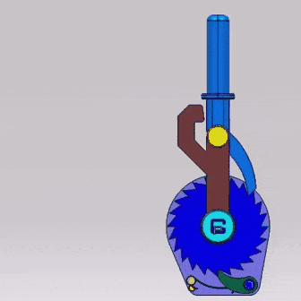
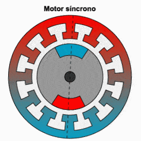
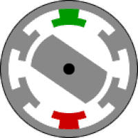

Projeto de transformação de energia.
Força binária.

Binário é a ação de duas forças de mesma intensidade, direção e sentidos opostos.

Inércia: segunda lei de Newton.

Pascal: força hidráulica ou pneumática.

Pascal: força hidráulica ou pneumática.

Inércia: segunda lei de Newton.

Inércia: segunda lei de Newton.
